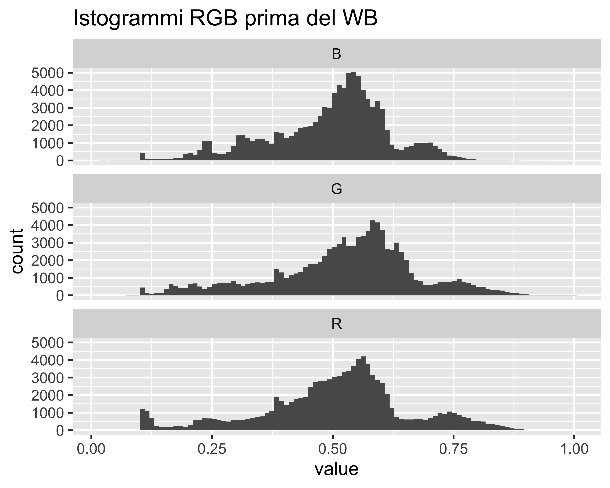
L’immagine fotografica
Introduzione al corso
Paolo Bosetti
Witness Journal
03 novembre 2025
Contenuti
Fondamenti teorici per la fotografia digitale:
- La teoria del colore
- L’immagine fotografica digitale
La teoria del colore
Cos’è il colore? come rappresentarlo?
Perché parlare di teoria del colore?
- La postproduzione non modifica la luce, ma la sua rappresentazione numerica
- Le immagini digitali vivono in spazi colore ben definiti
- Molti problemi pratici (dominanti, colori spenti, clipping) hanno cause percettive e matematiche
Obiettivo
Capire cosa stiamo modificando quando spostiamo uno slider
La luce
La luce è una radiazione elettromagnetica, descritta da
- intensità, o ampiezza, delle oscillazioni (luminosità)
- frequenza delle oscillazioni (colore)
- polarizzazione, o orientamento, delle oscillazioni (non percepibile!)
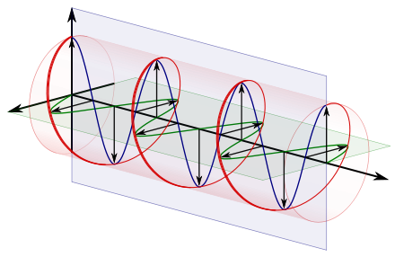
Importante
Note queste tre componenti, un fascio luminoso è perfettamente descritto
Il colore: una costruzione percettiva
L’occhio umano non percepisce la polarizzazione, ma percepisce colore e intensità
Il nostro sistema visivo elabora dei segnali fisici costruendo una rappresentazione
Questa rappresentazione è soggettiva e può essere ingannevole
Rappresentare un colore richiede la conoscenza dei meccanismi di percezione umana

Nota
Nel caso di The dress alcuni percepiscono il vestito come blue e nero, altri come bianco e oro
Il colore: una costruzione percettiva
In questa versione si comprende meglio la possibilità di interpretazione
- Il colore è una percezione, cioè una costruzione del nostro cervello
- La percezione è affetta dalla globalità dell’immagine, per cui il colore di un dettaglio è caratterizzato più dal suo contesto che dal dettaglio in sé
- Cos’è il colore bianco?
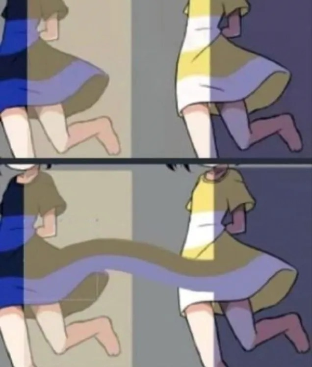
Il colore: una costruzione percettiva
- La luce è raramente monocromatica
- Più spesso è una combinazione, uno spettro continuo di lunghezze d’onda
- L’occhio umano non misura lo spettro, ma lo percepisce mediante cellule sensibili
- La retina contiene:
- bastoncelli, sensibili all’intensità in luce scarsa
- tre tipi di coni sensibili all’intensità in luce intensa su tre diverse lunghezze d’onda (S, M, L)
Nota
A livello percettivo umano, ogni colore è descritto da tre valori: due sono troppo pochi, tre sono troppi
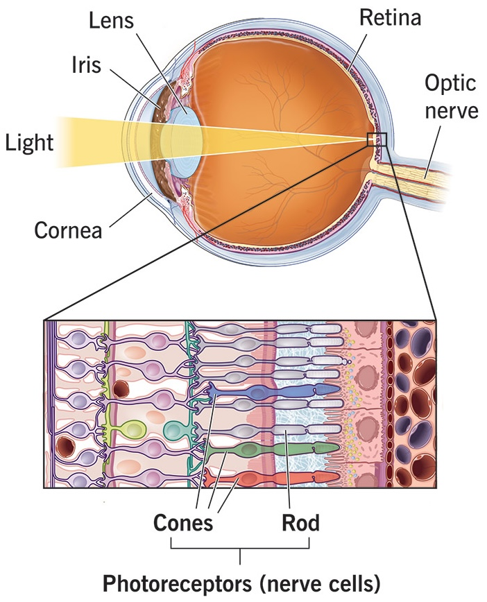
Il colore: una costruzione percettiva
- La maggior parte dei mammiferi ha solo i coni M e S
- I primati hanno sviluppato i coni L circa 40 mila anni fa
- L’assenza di coni L è un carattere recessivo: cecità al colore
Nota
Con l’età, modifiche nel cristallino (cateratta) aumentano la sensibilità all’infrarosso: questo spinge a cercare immagini più sature
Perché bastano tre componenti?
- Ogni cono fornisce un solo messaggio (quanta luce assorbe)
- Il cervello riceve quindi una terna di informazioni
- Spettri diversi possono produrre la stessa percezione cromatica (metameri)
Quindi mescolare tre componenti primarie (es. RGB) è sufficiente per rappresentare qualsiasi colore percepibile dall’occhio umano:
- Un’immagine RGB non descrive lo spettro
- Descrive come l’immagine stimola l’occhio umano
Più di tre coni?
Alcune specie animali hanno più di tre coni: la maggior parte degli uccelli ha anche un tipo di cono per UV; i pesci fino a 7, i crostacei fino a 16
Il colore come sottrazione di componenti
- Nella pittura (e nella stampa) i pigmenti assorbono componenti dello spettro:
- nessun pigmento = nero
- tutti i pigmenti = bianco
- Si usano tre primari (rosso-giallo-blu RBY, oppure ciano-magenta-giallo CYMK)
- I colori secondari sono quelli opposti ai primari
- I colori terziari sono i restanti
- I colori complementari sono quelli opposti
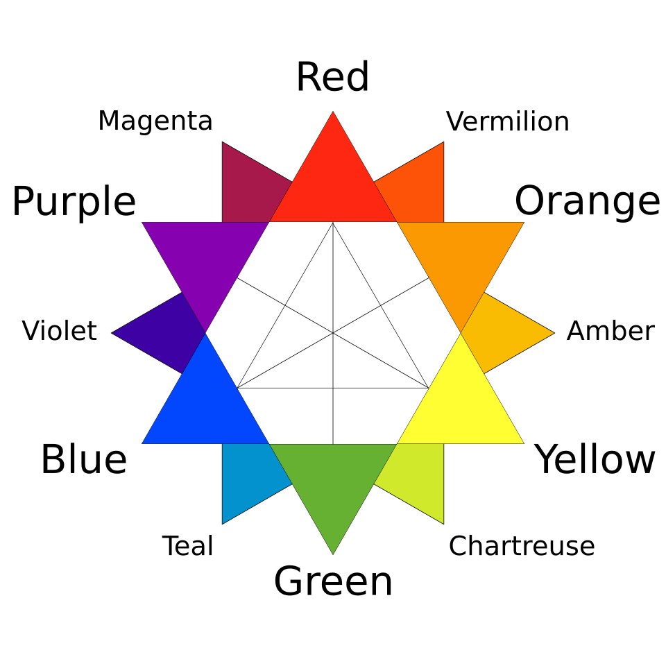
Il colore come somma di componenti
- Nei supporti digitali (display) i pixel emettono componenti dello spettro:
- nessun pigmento = nero
- tutti i pigmenti = bianco
- Si usano tre primari (rosso-verde-blu, RGB)
- I colori secondari sono quelli opposti ai primari
- I colori terziari sono i restanti
- I colori complementari sono quelli opposti
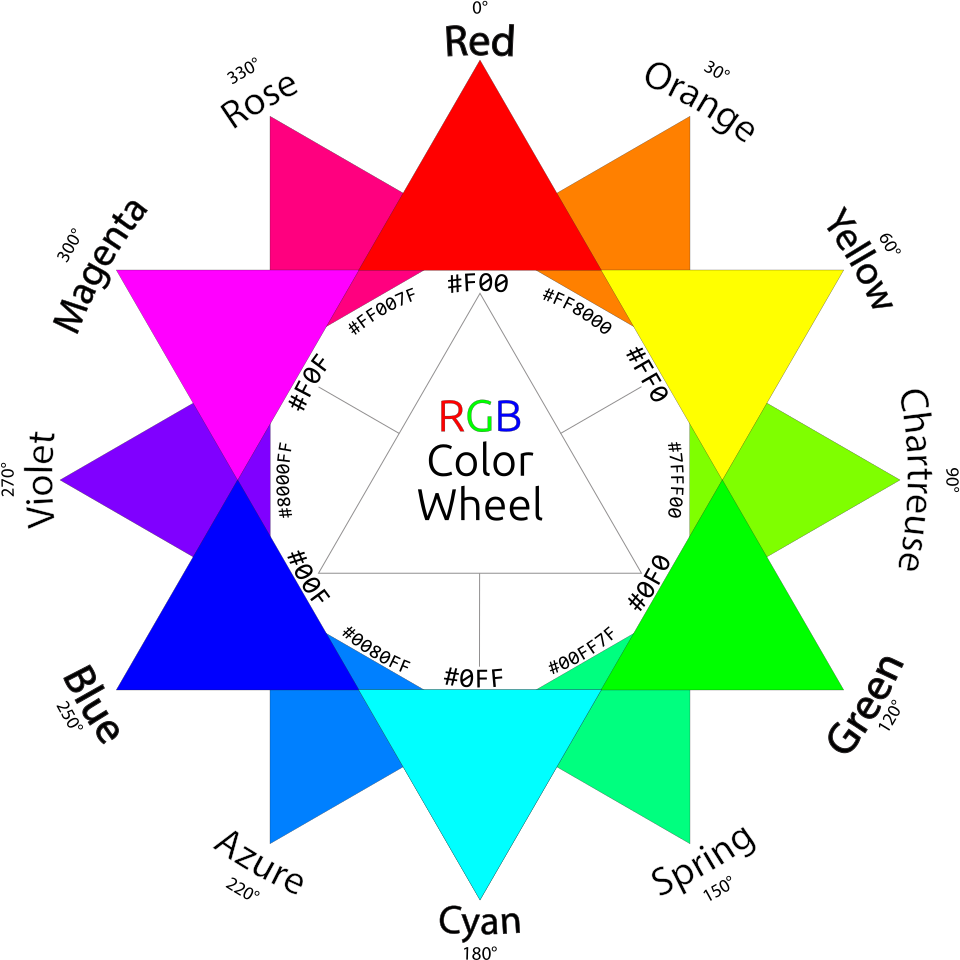
Gli spazi-colore
OK, servono e bastano tre componenti. Ma come misuriamo e rappresentiamo le relative intensità?
- Serve un accordo su che valori numerici dare alle componenti del colore (matematica 😱)
- La scelta è puramente arbitraria: per semplicità, si assume che ogni componente possa assumere valori da 0 a 1
- Nel 1931 la Commission Internationale de l’Eclairage (CIE) definì uno spazio 3-D di colore che comprendeva tutte le tinte visibili dall’occhio umano, con coordinate \(X, Y, Z\)
- Nel cubo di lato 1 in questo spazio ci sono tutte le tinte visibili, dal nero assoluto \(<0,0,0>\) al bianco assoluto \(<1,1,1>\)
- Ma uno spazio 3-D è scomodo da visualizzare: come possiamo semplificare?
- Si normalizza la luminanza (cioè la componente di luminosità)
Lo spazio-colore CIE
Lo spazio colore CIE rappresenta cioè le intensità di tre componenti estreme corrispondenti a:
- \(X\): rosso-viola ipersaturo, con due lunghezze d’onda a 450 nm e 600 nm
- \(Y\): verde ipersaturo, a 520 nm
- \(Z\): blu ipersaturo, a 477 nm
Per rappresentarli su un piano 2-D si può usare la sezione del cubo con intensità complessiva uniforme e uguale a 1
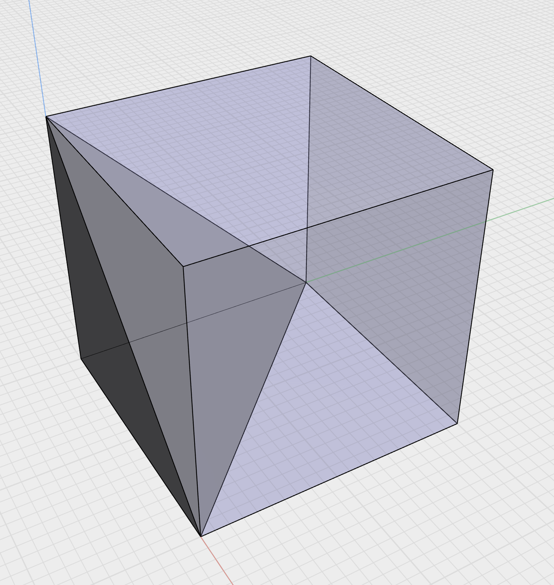
Gli spazi colore come sottoinsieme del CIE
Importante
Non tutto lo spazio CIE è comunque percepibile: sul contorno della sezione si riportano i limiti percettivi con le rispettive lunghezze d’onda
- Diversi dispositivi digitali (sia di cattura che di riproduzione) generalmente non coprono l’intero spettro visibile, ma solo un sottoinsieme
- Esistono spazi-colore standard adatti a diversi dispositivi
- Ad es. lo spazio sRGB è stato il riferimento per i display fino all’avvento di display ad alta dinamica nel decennio attuale
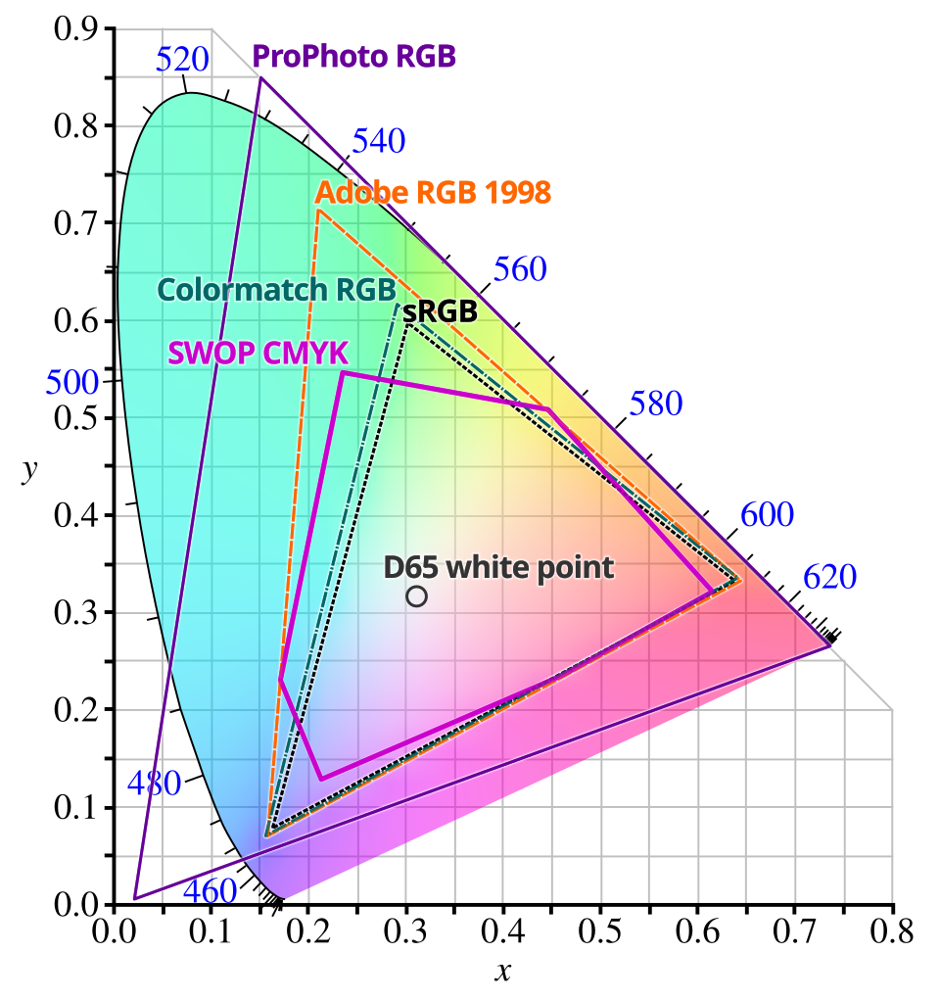
Gli spazi colore come sottoinsieme del CIE
- Il punto marcato D65 è detto illuminante CIE e corrisponde al bianco percepito dalla radiazione riflessa da una superficie bianca illuminata da luce diurna media
- Il contorno a campana riporta i colori spettrali (dall’indaco al rosso)
- Il segmento in basso riporta i colori non-spettrali (porpore)
- Tutti i colori sul piano CIE hanno la stessa luminanza, mentre la saturazione cresce da D65 verso il bordo
- Quindi posso rappresentare lo stesso spazio colore anche come hue, saturation, luminance (HSL), cioè tinta, saturazione e luminanza
Avviso
Convertire tra spazi colore può comportare modifica percettiva sostanziale di una immagine!
L’effetto degli spazi colore
- Lo spazio colore adottato è scritto nei metadati di una immagine
- Il sistema di visualizzazione (display o stampa) può gestire lo spazio colore (color-management) oppure no
- Color management significa che il dispositivo trasforma i colori estendendoli o comprimendoli allo spazio-colore di destinazione (gamut)
- A seconda del profilo colore adottato da sorgente e destinazione e del fatto che il dispositivo di uscita supporti il color management possono aversi diverse situazioni
Senza color-management
Questo avviene soprattutto su dispositivi e software che gestiscono solo sRGB, come browser antiquati o semplificati per dispositivi minimali
Adobe RGB sRGB
- Si ha una compressione dello spazio colore
- L’immagine risulta piatta
- In particolare, i verdi e (un po’ meno) i rossi sono spenti
- Si guadagna una dominante magenta
sRGB Adobe RGB (o P3)
- Si ottiene una immagine con colori generalmente troppo saturi
- Si nota soprattutto nei verdi, che diventano radioattivi
- Si guadagna una dominante verde
- Le variazioni di colore sono meno dolci
Con color-management
Il software/dispositivo legge il profilo colore nell’immagine e riproietta i colori nello spazio più piccolo (gamut ridotto)
Adobe RGB sRGB
- I colori sono corretti
- Si perde però in vivacità percettiva (perché il dispositivo non è in gradi di visualizzare i colori più saturi)
- La differenza si percepisce maggiormente nei verdi
sRGB Adobe RGB (o P3)
- I colori sono percettivamente identici a quelli visualizzati su un display Adobe RGB
- Tutavia non si sfrutta la capacità di stimolo visivo del display
In conclusione
- Oggi la maggior parte dei dispositivi è in grado di gestire il colore
- Conviene impostare la camera in modo da creare file in formato Adobe RGB
- In questo modo si possono sfruttare al meglio dispositivi e software moderni
- In Lightroom, in modalità Sviluppo abilitare Prova Colore e poi scegliere il profilo/spazio di destinazione (in alto a destra, sotto l’istogramma)
- La simulazione funziona bene se si usa un display con gamut ampio (P3 o Adobe RGB) e si vuole verificare un gamut più ridotto (ad esempio per la stampa)
Impostare il profilo colore in camera
La maggior parte delle camere consente di scegliere lo spazio colore (sRGB o Adobe RGB):
- Se si scatta in JPG, la scelta cambia la qualità dell’immagine a seconda del dispositivo di destinazione (vedi sopra)
- Se si scatta in RAW, il contenuto dell’immagine non cambia, tuttavia:
- il profilo viene salvato nei metadati e usato dal software di sviluppo
- il profilo viene utilizzato per la generazione dell’anteprima JPG
- il profilo viene utilizzato per la visualizzazione dell’istogramma
- Quindi, scegliere Adobe RGB in generale dà meno clipping delle saturazioni, ed è più utile per anticipare cosa è possibile ottenere dal RAW
L’immagine digitale
Come si costruisce un’immagine fotografica digitale?
Com’è fatto un sensore (CMOS)
Fotositi
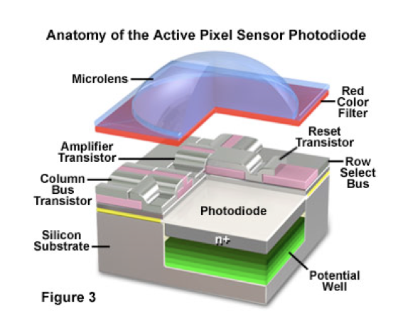
Com’è fatto un sensore (CMOS)
Color Filter Array
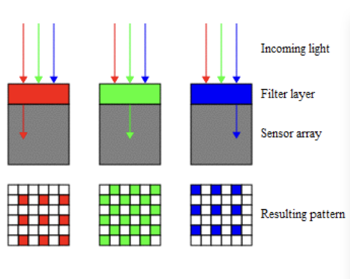
Color Filter Array (CFA)
Bayer o X-Trans
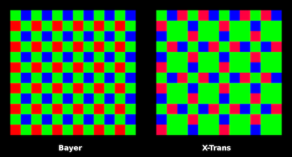
Interpolazione, o “sviluppo RAW”
left
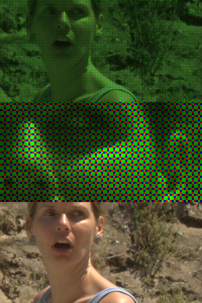
Profindità di colore (bit)
Gamma dinamica
ISO e sensibilità
Formati RAW
Formati di output: JPG
Formati di output: PNG
Formati di output: TIFF
Bilanciamento del bianco: idea chiave
- Il cervello umano compensa automaticamente la temperatura della luce
- Il sensore non lo fa
- Il bilanciamento del bianco è una correzione moltiplicativa dei canali
➡️ Serve a ristabilire una risposta neutra ai grigi
Bilanciamento del bianco: punto critico
- Il WB non è una correzione estetica, ma percettiva
- Va fatto prima di contrasto e saturazione
- Un WB errato distorce:
- istogrammi RGB
- separazione cromatica
- conversioni di spazio colore
Profili ICC: perché sono necessari
- I numeri RGB non hanno significato assoluto
- Un profilo ICC dice:
- che colore reale corrisponde a quei numeri
- come convertire correttamente tra dispositivi
📌 Senza profilo ICC → i colori sono ambigui
# A tibble: 3 × 2
channel mean_value
<chr> <dbl>
1 B 0.494
2 G 0.527
3 R 0.506➡️ Stessi numeri RGB, profili diversi → colori diversi
{width=100%}
Pipeline colore semplificata con profili ICC
- I numeri RGB non hanno significato assoluto
- Un profilo ICC dice:
- che colore reale corrisponde a quei numeri
- come convertire correttamente tra dispositivi
📌 Senza profilo ICC → i colori sono ambigui
Catena del colore (semplificata)
- Sensore (risposta spettrale propria)
- Profilo camera
- Spazio di lavoro (es. ProPhoto)
- Editing
- Conversione verso output (monitor / stampa)
➡️ Ogni passaggio è una trasformazione di coordinate
Cos’è il gamut
- Il gamut è l’insieme dei colori rappresentabili
- Dipende dal dispositivo o dallo spazio colore
- Non tutti i colori percepibili sono rappresentabili
Esempio:
- sRGB ⊂ AdobeRGB ⊂ ProPhotoRGB
Gamut e postproduzione
- Aumentare saturazione ≠ aumentare gamut
- I colori fuori gamut vengono:
- compressi
- tagliati (clipping)
📌 Problema tipico: colori vividi a monitor → spenti in stampa
{width=100%}
Confronto concettuale tra gamut (sRGB vs AdobeRGB)
- Aumentare saturazione ≠ aumentare gamut
- I colori fuori gamut vengono:
- compressi
- tagliati (clipping)
- deformati
📌 Problema tipico: colori vividi a monitor → spenti in stampa
Visualizzare il gamut (idea)
- Lightroom lavora sempre in uno spazio interno molto ampio (simile a ProPhoto)
- Il problema del gamut emerge:
- in soft proofing
- in export
- Il diagramma CIE xy serve a capire, non a lavorare
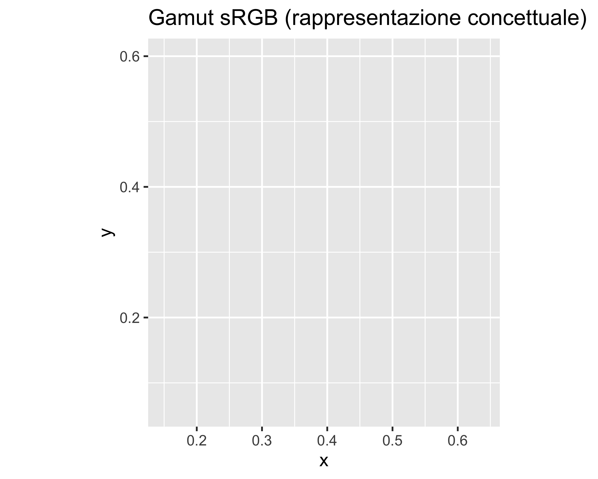
In Lightroom non vediamo il gamut, ma ne subiamo gli effetti in output
- Avvisi di gamut in soft proof
- Colori saturi che collassano
- Perdita di separazione cromatica
- Il diagramma CIE xy mostra:
- colori percepibili
- contorni dei gamut
- Utile concettualmente, non operativo
In pratica lavoriamo sempre in RGB
Lightroom: perché uno spazio interno ampio
- Lightroom usa un RGB molto esteso (simile a ProPhoto)
- Serve a:
- evitare clipping durante editing
- preservare saturazioni elevate
- L’utente non sceglie questo spazio
📌 Il problema nasce solo in export
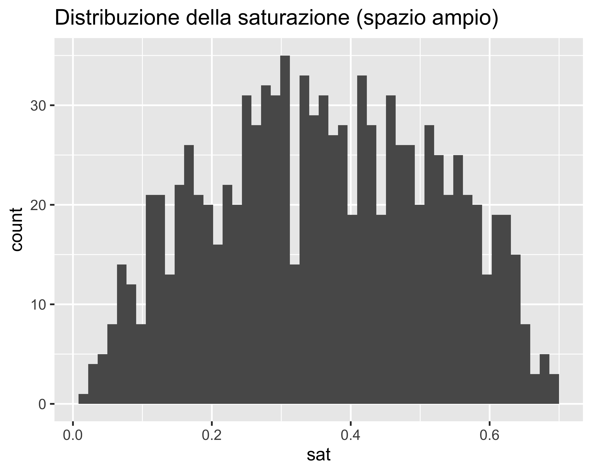
- In Develop: tutto sembra “ok”
- In Export sRGB:
- compressione
- clipping
Lightroom protegge l’editing, non l’output finale
- Gamut molto ampio
- Riduce il rischio di clipping in editing
- Richiede profondità elevata (16 bit)
⚠️ Con 8 bit → posterizzazione
Messaggi chiave da portare a casa
- Il colore è una costruzione percettiva
- RGB funziona perché l’occhio è tricromatico
- WB e profili ICC sono fondamentali, non opzionali
- Il gamut è un vincolo fisico, non un’opinione
Esercitazione guidata (Lightroom-centric)
Stesso file RAW
- WB automatico
- WB manuale (pipetta su grigio)
- Saturazione + Vibrance
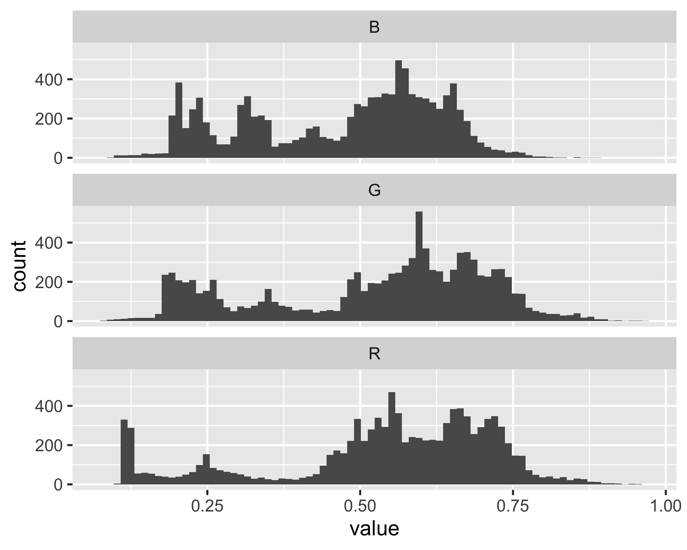
Domanda chiave:
cosa è cambiato nei numeri, non nell’immagine?
- WB → riallinea i canali
- Saturazione → aumenta separazione
- Export → applica i vincoli del gamut
📌 Lightroom è non distruttivo, ma non è neutro
- Stessa immagine RAW
- WB diverso
- Spazio colore diverso
- Analisi istogrammi RGB
➡️ Osservare cosa cambia numericamente, non solo visivamente